📚 4주차 Python Deep Learning (2026.11.03 Tue ~ 2026.11.09 Mon) | Total : 5 days
📕 A. Deep Learning Basics (딥러닝 기초)
학습일: 2026.11.03 (Tue)
📃 a. Deep Learning (딥러닝)
1. 딥러닝이란?
딥러닝(Deep Learning)은 인공신경망(Artificial Neural Network)을 여러 층으로 깊게 쌓아 데이터의 특징과 패턴을 학습하는 머신러닝의 한 분야이다.
인간의 뇌에 존재하는 신경세포(Neuron)의 연결 구조에서 아이디어를 얻었으며, 다수의 인공 뉴런이 서로 연결되어 데이터를 처리한다.
머신러닝과 딥러닝의 차이
| 구분 | 머신러닝 | 딥러닝 |
|---|---|---|
| 특징 추출 | 사람이 직접 설계하는 경우가 많음 | 모델이 자동으로 학습 |
| 데이터 | 비교적 적은 데이터로도 가능 | 일반적으로 많은 데이터 필요 |
| 연산 자원 | CPU로도 충분한 경우가 많음 | GPU 활용도가 높음 |
| 구조 | 다양한 알고리즘 사용 | 다층 신경망 기반 |
| 대표 기술 | Decision Tree, SVM, KNN | CNN, RNN, Transformer |
2. 딥러닝의 기본 구조
인공신경망은 일반적으로 다음과 같은 구조로 구성된다.
- Input Layer (입력층): 데이터를 입력받는 층
- Hidden Layer (은닉층): 입력 데이터를 처리하고 특징을 학습하는 층
- Output Layer (출력층): 최종 예측 결과를 출력하는 층
은닉층이 여러 개 쌓여 있는 신경망을 Deep Neural Network(DNN)라고 한다.
3. 딥러닝의 활용 분야
- Computer Vision: 이미지 및 영상 인식
- Natural Language Processing: 자연어 처리
- Speech Recognition: 음성 인식
- Autonomous Driving: 자율주행
- Robotics: 로봇 인식 및 행동 제어
- Generative AI: 이미지, 텍스트, 음성 생성
핵심 정리
딥러닝은 데이터에서 특징을 스스로 학습하는 신경망 기반 기술이다. 특히 이미지 인식, 로봇 제어, 자율주행 등 복잡한 패턴을 처리하는 분야에서 중요하게 활용된다.
📃 b. Perceptron (퍼셉트론)
1. 퍼셉트론이란?
퍼셉트론(Perceptron)은 인공신경망의 가장 기본적인 구성 요소로, 여러 입력값을 받아 가중치를 곱하고 이를 합산하여 결과를 출력하는 알고리즘이다.
1957년 프랭크 로젠블랫(Frank Rosenblatt)이 제안한 초기 인공신경망 모델이다.
2. 퍼셉트론의 구성 요소
| 구성 요소 | 설명 |
|---|---|
| Input (입력값) | 모델에 전달되는 데이터 |
| Weight (가중치) | 각 입력값의 중요도를 결정 |
| Bias (편향) | 출력 기준을 조정하는 값 |
| Summation | 입력값과 가중치를 곱한 후 합산 |
| Activation Function | 계산 결과를 바탕으로 출력 결정 |
3. 퍼셉트론의 수식
퍼셉트론은 입력값에 가중치를 곱하고 편향을 더한다.
가중합(Weighted Sum)
z = w₁x₁ + w₂x₂ + ... + wₙxₙ + b
- x: 입력값
- w: 가중치
- b: 편향
- z: 가중합 결과
이후 활성화 함수를 적용하여 최종 출력값을 결정한다.
4. Python 실습
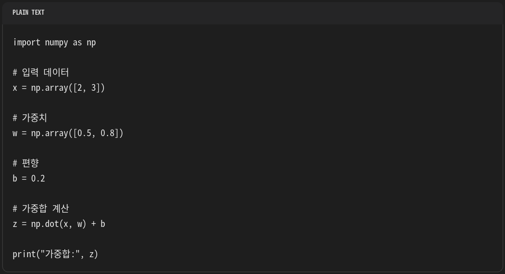
PLAIN TEXT 코드
출력 결과:
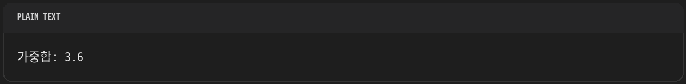
PLAIN TEXT 코드
핵심 정리
퍼셉트론은 입력값과 가중치를 이용해 결과를 계산하는 기본적인 신경망 모델이다. 여러 퍼셉트론을 연결하면 더 복잡한 문제를 해결할 수 있다.
📃 c. Activation Function (활성화 함수)
1. 활성화 함수란?
활성화 함수(Activation Function)는 퍼셉트론에서 계산한 가중합 결과를 입력받아 최종 출력값으로 변환하는 함수이다.
활성화 함수가 필요한 가장 중요한 이유는 비선형성(Non-linearity)을 부여하기 위해서이다.
만약 활성화 함수가 없다면 여러 층의 신경망을 쌓더라도 전체적으로 하나의 선형 연산과 같아진다.
2. 대표적인 활성화 함수
① Step Function (계단 함수)
입력값이 0보다 크거나 같으면 1, 작으면 0을 출력한다.
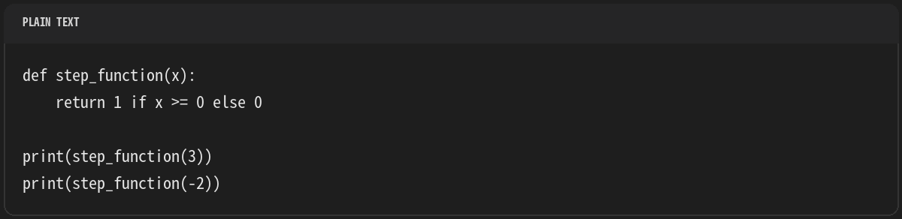
PLAIN TEXT 코드
출력:
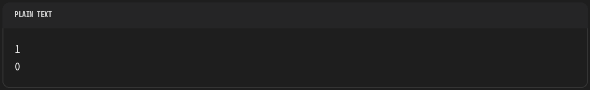
PLAIN TEXT 코드
주로 초기 퍼셉트론에서 사용되었으며, 미분이 어려워 현대 딥러닝의 역전파 학습에는 적합하지 않다.
② Sigmoid Function (시그모이드 함수)
입력값을 0과 1 사이의 값으로 변환한다.
수식:
σ(x) = 1 / (1 + e⁻ˣ)
- 출력 범위: 0 ~ 1
- 확률을 표현하는 이진 분류 출력층에 활용
- 단점: 입력값이 매우 크거나 작으면 기울기가 작아지는 기울기 소실 문제 발생
③ ReLU (Rectified Linear Unit)
입력값이 0보다 작으면 0, 0보다 크면 입력값을 그대로 출력한다.
수식:
f(x) = max(0, x)
- 계산이 간단하고 빠름
- 기울기 소실 문제를 일부 완화
- 은닉층에서 널리 사용
- 단점: 음수 영역에서 뉴런이 활성화되지 않는 Dying ReLU 문제 발생 가능
④ Softmax Function
여러 클래스의 출력값을 확률 분포 형태로 변환하는 함수이다.
- 다중 클래스 분류에 활용
- 각 클래스의 확률 합계는 1
- 일반적으로 분류 모델의 출력층에서 사용
3. Python 실습
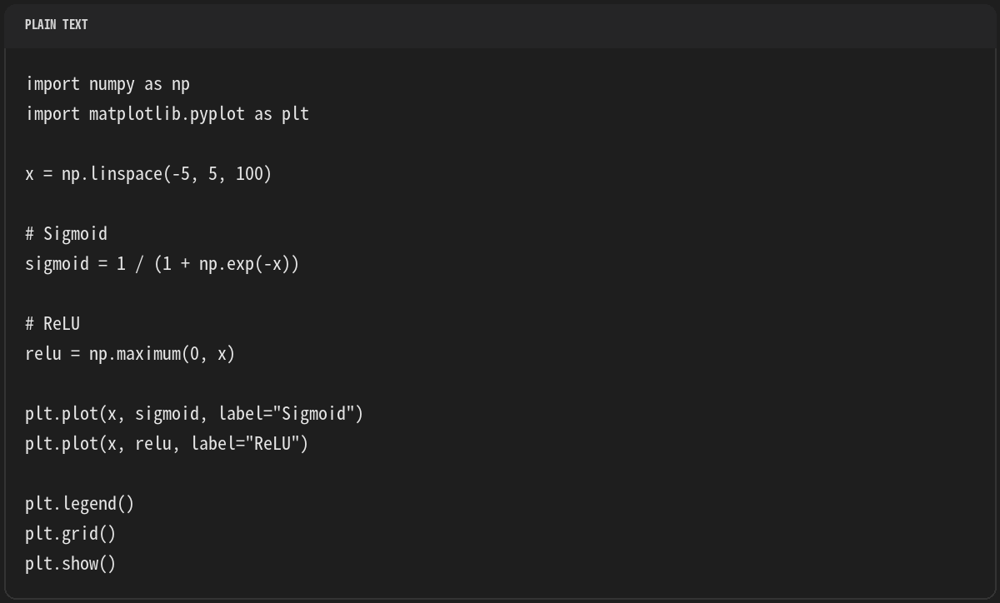
PLAIN TEXT 코드
핵심 정리
활성화 함수는 신경망에 비선형성을 부여하여 복잡한 데이터 패턴을 학습할 수 있도록 한다. 문제의 특성에 따라 적절한 활성화 함수를 선택해야 한다.
📃 d. Multi Layer Perceptron | MLP (다층 퍼셉트론)
1. MLP란?
MLP(Multi Layer Perceptron)는 여러 개의 퍼셉트론을 층(Layer) 형태로 연결한 인공신경망이다.
단일 퍼셉트론은 선형적으로 분리 가능한 문제만 해결할 수 있지만, 여러 층을 연결하고 활성화 함수를 적용하면 더 복잡한 비선형 문제를 학습할 수 있다.
2. MLP의 구조
MLP는 일반적으로 다음 세 가지 층으로 구성된다.
- Input Layer: 입력 데이터를 전달
- Hidden Layer: 데이터의 특징과 패턴을 학습
- Output Layer: 최종 예측 결과 생성
3. 단일 퍼셉트론과 MLP의 차이
| 구분 | 단일 퍼셉트론 | MLP |
|---|---|---|
| 층의 구조 | 단일 계산층 | 여러 층 |
| 학습 능력 | 선형 문제 | 비선형 문제 |
| 활성화 함수 | 초기에는 Step 사용 | ReLU, Sigmoid 등 |
| 활용 | 단순 분류 | 이미지, 예측, 분류 등 |
4. XOR 문제
XOR(Exclusive OR)은 두 입력값이 서로 다르면 1, 같으면 0을 출력하는 논리 연산이다.
| Input 1 | Input 2 | Output |
|---|---|---|
| 0 | 0 | 0 |
| 0 | 1 | 1 |
| 1 | 0 | 1 |
| 1 | 1 | 0 |
XOR 문제는 단일 퍼셉트론으로 해결할 수 없는 대표적인 비선형 문제이다.
하지만 은닉층을 가진 MLP를 사용하면 해결할 수 있다.
5. Python 실습: PyTorch MLP 구조
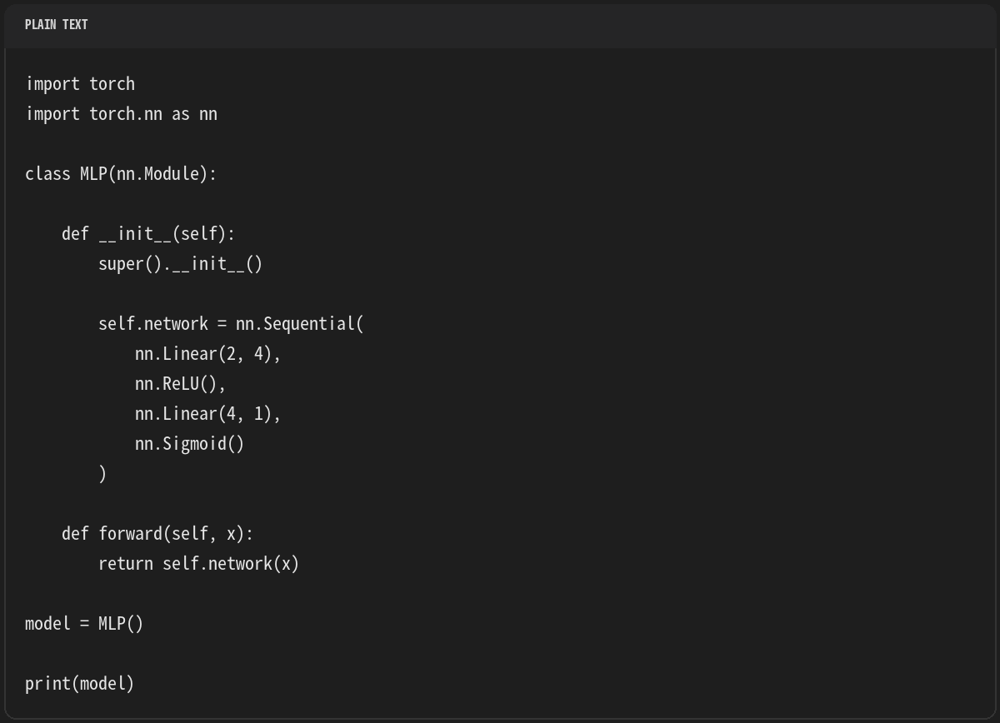
PLAIN TEXT 코드
코드 설명:
nn.Linear(2, 4): 입력 2개를 받아 은닉층의 뉴런 4개로 전달nn.ReLU(): 비선형 활성화 함수 적용nn.Linear(4, 1): 은닉층 결과를 출력 뉴런 1개로 전달nn.Sigmoid(): 출력값을 0~1 사이로 변환
핵심 정리
MLP는 여러 층의 퍼셉트론을 연결하여 복잡한 패턴을 학습할 수 있는 신경망 구조이다. 단일 퍼셉트론의 한계를 극복하는 대표적인 모델이다.
📃 e. Forward & Backpropagation (순전파와 역전파)
1. Forward Propagation (순전파)
순전파는 입력 데이터를 신경망에 전달하여 최종 예측값을 계산하는 과정이다.
일반적인 진행 과정은 다음과 같다.
- 입력 데이터 전달
- 가중치와 입력값의 곱셈
- 편향을 더해 가중합 계산
- 활성화 함수 적용
- 다음 층으로 결과 전달
- 최종 출력값 계산
2. Loss Function (손실 함수)
손실 함수는 모델이 예측한 값과 실제 정답 사이의 차이를 계산하는 함수이다.
대표적인 손실 함수:
- MSE (Mean Squared Error): 평균 제곱 오차, 주로 회귀 문제
- Cross Entropy Loss: 분류 문제에서 활용
손실값이 작을수록 모델의 예측값이 실제 정답에 가까워졌다는 의미이다.
3. Backpropagation (역전파)
역전파는 순전파를 통해 계산한 손실값을 바탕으로 각 가중치가 손실에 얼마나 영향을 주었는지 계산하는 과정이다.
미분과 연쇄 법칙(Chain Rule)을 이용하여 각 가중치의 기울기(Gradient)를 계산한다.
계산된 기울기는 Optimizer를 통해 가중치를 업데이트하는 데 사용된다.
가중치 업데이트 수식
w_new = w_old - η × ∂L/∂w
- w: 가중치
- η: 학습률(Learning Rate)
- L: 손실 함수
- ∂L/∂w: 가중치에 대한 손실 함수의 기울기
4. 순전파와 역전파의 차이
| 구분 | 순전파 | 역전파 |
|---|---|---|
| 방향 | 입력층 → 출력층 | 출력층 → 입력층 |
| 목적 | 예측값 계산 | 기울기 계산 |
| 주요 작업 | 가중합, 활성화 함수 | 미분, 연쇄 법칙 |
| 결과 | 예측값과 손실값 | 각 파라미터의 기울기 |
5. 딥러닝 학습 전체 과정
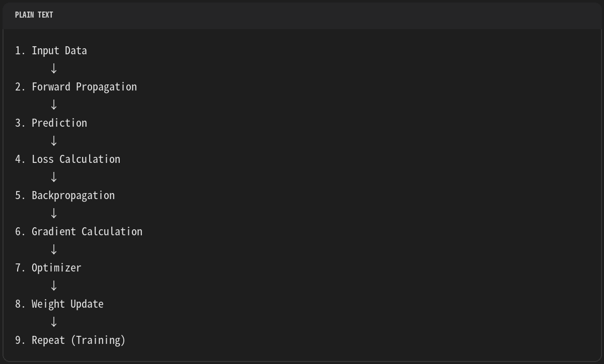
PLAIN TEXT 코드
핵심 정리
순전파는 예측값을 계산하는 과정이고, 역전파는 예측 오류를 바탕으로 가중치의 기울기를 계산하는 과정이다.
이 두 과정이 반복되면서 모델은 점점 더 정확한 예측을 수행하게 된다.
📃 f. PyTorch (Tensor와 Autograd)
1. PyTorch란?
PyTorch는 Meta에서 개발한 오픈소스 딥러닝 프레임워크이다.
Python을 기반으로 인공신경망을 구축하고 학습시킬 수 있으며, CPU와 GPU를 활용한 텐서 연산을 지원한다.
대표적인 특징:
- Tensor 기반 데이터 연산
- GPU 가속 지원 (CUDA)
- Autograd를 통한 자동 미분
- 신경망 구축을 위한
torch.nn - 모델 학습 및 최적화 지원
2. Tensor (텐서)
Tensor는 PyTorch에서 사용하는 다차원 배열 자료구조이다.
NumPy의 ndarray와 유사하지만 GPU를 활용한 연산이 가능하다는 특징이 있다.
| 차원 | 형태 | 예시 |
|---|---|---|
| 0D | Scalar | 10 |
| 1D | Vector | [1, 2, 3] |
| 2D | Matrix | [[1, 2], [3, 4]] |
| 3D | 3D Tensor | 이미지 또는 시계열 데이터 등 |
| 4D | 4D Tensor | 이미지 배치 데이터 등 |
3. Tensor 생성 및 연산
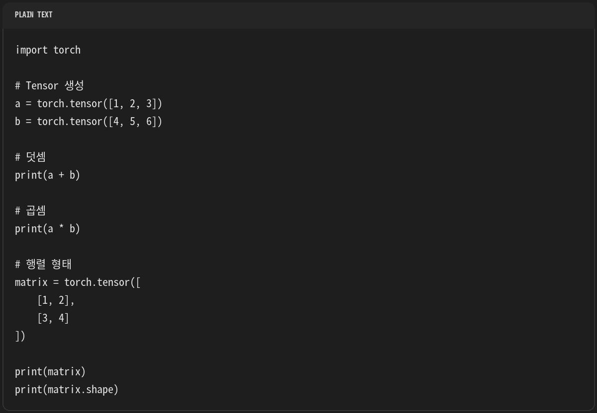
PLAIN TEXT 코드
4. CPU와 GPU 확인
PyTorch는 CPU 또는 GPU에서 텐서 연산을 수행할 수 있다.
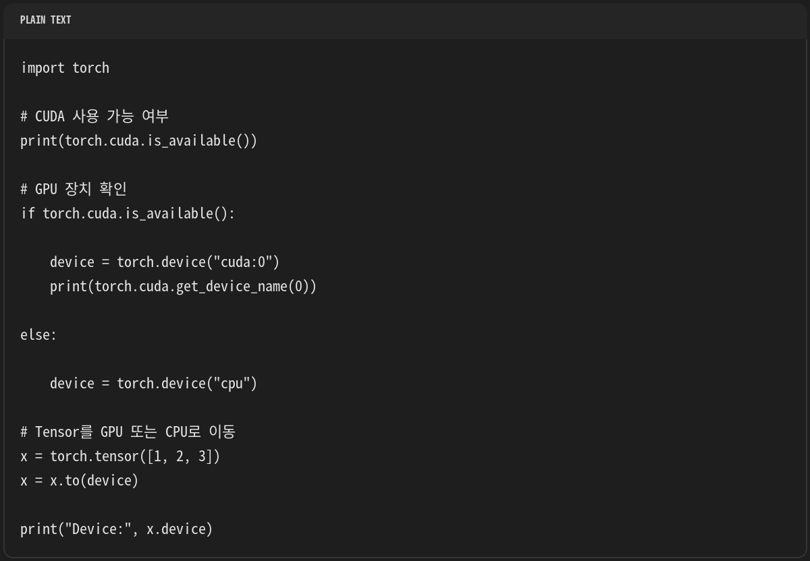
PLAIN TEXT 코드
cpu: CPU에서 연산cuda:0: 첫 번째 NVIDIA GPU에서 연산torch.cuda.is_available(): CUDA 사용 가능 여부 확인
5. Autograd (자동 미분)
Autograd는 PyTorch에서 제공하는 자동 미분 기능이다.
딥러닝 모델을 학습할 때는 각 가중치에 대한 손실 함수의 기울기를 계산해야 한다.
Autograd는 연산 과정을 추적하고, backward()를 호출하면 자동으로 기울기를 계산한다.
Python 실습
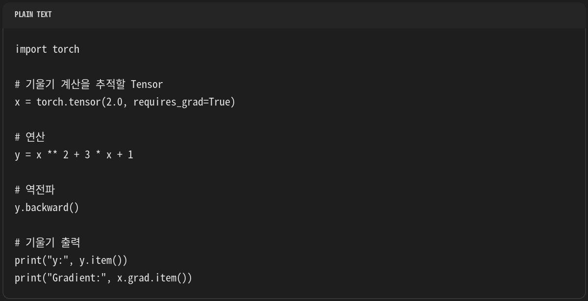
PLAIN TEXT 코드
출력 결과:
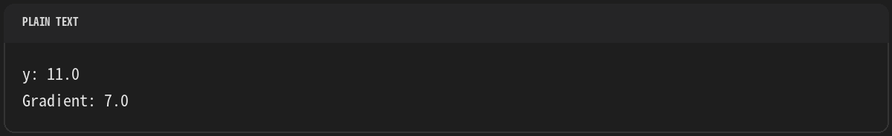
PLAIN TEXT 코드
수학적으로 확인하면 다음과 같다.
y = x² + 3x + 1
이를 x에 대해 미분하면,
dy/dx = 2x + 3
x = 2를 대입하면,
dy/dx = 2(2) + 3 = 7
따라서 PyTorch의 Autograd가 계산한 기울기 7은 수학적으로 계산한 결과와 일치한다.
6. Gradient 초기화
PyTorch에서는 .backward()를 호출할 때 기존에 계산된 기울기에 새로운 기울기가 누적된다.
따라서 학습 과정에서는 일반적으로 매 반복마다 기울기를 초기화해야 한다.
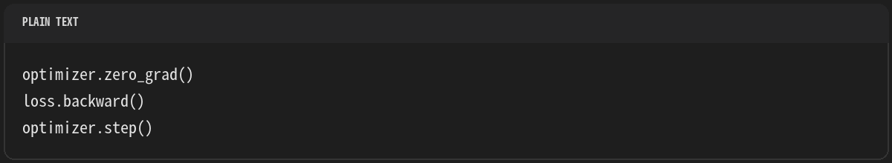
PLAIN TEXT 코드
zero_grad(): 기존 기울기 초기화backward(): 기울기 계산step(): 가중치 업데이트
7. PyTorch 학습 과정
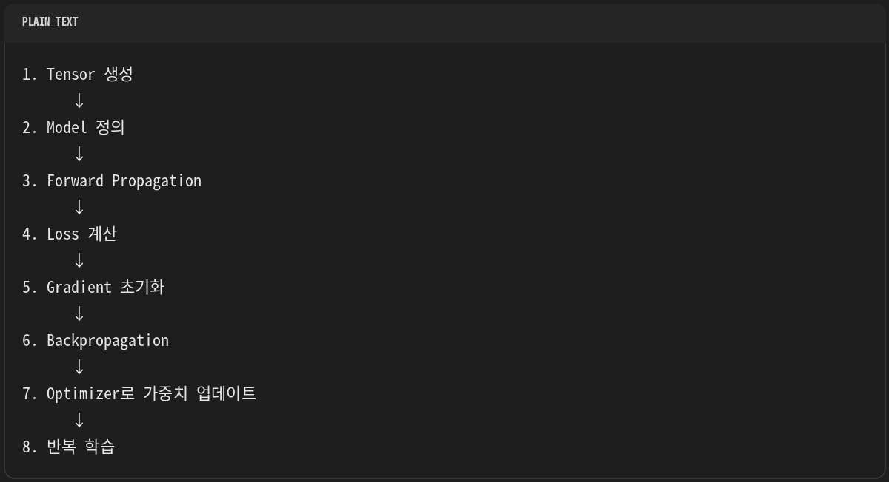
PLAIN TEXT 코드
핵심 정리
PyTorch는 딥러닝 모델을 구축하고 학습시키기 위한 프레임워크이다.
Tensor는 데이터를 표현하고 연산하는 기본 자료구조이며, Autograd는 역전파에 필요한 기울기를 자동으로 계산한다.
특히 GPU와 CUDA를 연동하면 대규모 행렬 연산을 빠르게 처리할 수 있다.
📝 4주차 학습 마무리
이번 학습에서는 딥러닝의 기본 구조부터 PyTorch의 Tensor와 Autograd까지 살펴보았다.
| 학습 주제 | 핵심 내용 |
|---|---|
| Deep Learning | 인공신경망을 여러 층으로 쌓아 패턴 학습 |
| Perceptron | 입력값, 가중치, 편향을 이용한 계산 |
| Activation Function | 신경망에 비선형성 부여 |
| MLP | 여러 퍼셉트론을 연결한 신경망 |
| Forward Propagation | 입력 데이터로 예측값 계산 |
| Backpropagation | 손실을 바탕으로 기울기 계산 |
| PyTorch | 딥러닝 모델 구축 및 학습 프레임워크 |
| Tensor | 다차원 데이터 연산 구조 |
| Autograd | 자동 미분 및 기울기 계산 |
🎯 다음 학습 목표
- PyTorch를 이용한 인공신경망 직접 구현
- Tensor의 차원 및 행렬 연산 이해
- Autograd와 Gradient 계산 실습
- Optimizer와 Loss Function의 역할 이해
- 실제 데이터셋을 활용한 딥러닝 모델 학습
최종 목표: 딥러닝의 기본 원리를 이해하고, PyTorch를 활용하여 직접 신경망 모델을 구축하고 학습시킬 수 있는 기초 역량 확보.